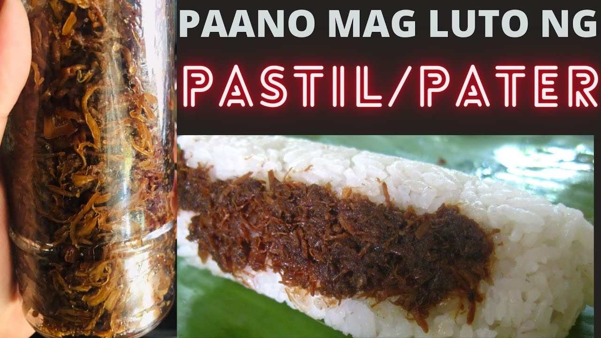

Team Pogi
ORIGINAL PATER

INGREDIENTS
- ½ cup Canola Oil
- 2 cloves Garlic minced
- 1 med. Red Onion minced
- 350 g Chicken boiled & Shredded
- 4 tbsp Soy Sauce
- 3 tbsp White Vinegar
- 1½ tbsp White/Brown Sugar
- ½ tsp Black Pepper
- ½ tsp Turmeric Powder optional
- 2 tbsp Margarine optional
PROCEDURE
~ Shredded Chicken ~
- In a pot add 1 liter of water, 1 tsp Salt and 1 tsp Black Pepper & 2 Laurel Leaves
- Add 350g Chicken Breast Fillet
- Boil on med. heat for about 15 mins.
- Drain, let it cool down & shred the chicken
~ Let's Fry ~
- In a fry pan pour ½ cup Oil
- Add minced Garlic and minced Red Onion
- Fry until translucent then add 350g shredded chicken and saute
- Add ½tsp Black Pepper, ½tsp Turmeric & 1½tbsp Sugar
- Add 4 tbsp soy sauce & saute
- Add 3 tbsp vinegar & let it simmer
- add 2 tbsp margarine (optional)
- Fry until chicken flakes are crispy
~ Assemble ~
- Originally Pastil is wrapped in Banana Leaves.
- But I'm using a 400ml Plastic Container at the moment.
- 1/2 cup of Rice, Lettuce (optional), Tomato,
- hard boild Egg & 1/4 cup of Pastil
- You can also add Cucumber
Serve and Enjoy!